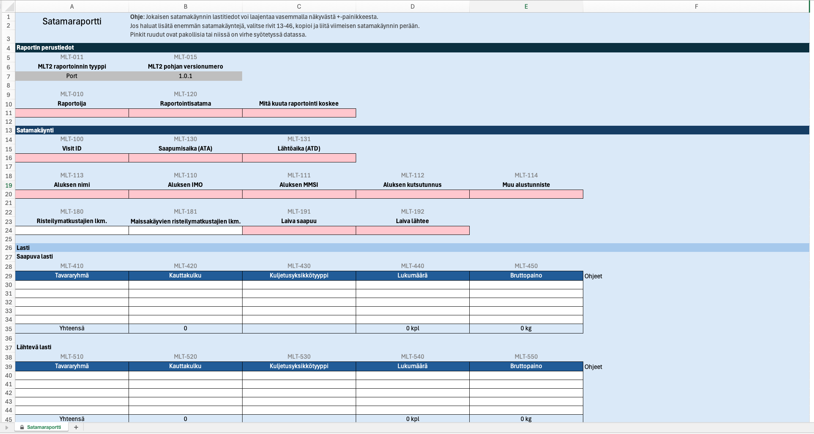

Port Statistics Data Submission
This page explains what data is expected from ports and how port statistics data can be submitted. Data can be submitted either as an Excel file or through the National Port API.
Submission Options
There are three practical ways to submit port statistics data:
- Option 1: Fill in the official Excel template manually.
- Option 2: Generate an Excel file automatically using the official Excel format.
- Option 3: Submit data directly through the National Port API.
Excel File Submission
Options 1 and 2 both use the same Excel file format. The difference is how the Excel file is created: either manually by filling in the official template, or automatically by generating a file from a port system.
Downloads
Excel format documentation:
Download MLT2-Port-Excel-File-Format-Documentation-v1.0.1.pdf
Official Excel template:
Download Satamaraportti_v1.0.1.xlsx

Submission: Completed Excel files are submitted by email. The official recipient email address will be confirmed and communicated separately. Ports that already have an agreed submission process may continue using it.
Option 1: Fill in the Official Excel Template Manually
Choose this option if port statistics are prepared manually and no system integration is available. Download the official Excel template, fill in the required information, save the file, and submit it by email.
- Download the official Excel template.
- Fill in the report header data.
- Add one row for each port call.
- Make sure each row contains at least one vessel identifier.
- Save the completed file in .xlsx format.
- Submit the file by email.
Option 2: Generate an Excel File Automatically
Choose this option if your port system can produce port statistics data electronically, but direct API integration is not available.
Instead of filling in the template manually, your system may generate an Excel file that follows the same structure, field definitions and validation rules as the official Excel template.
- Generate an Excel file from the port system.
- Use the official MLT2 Excel file format.
- Ensure that all required fields are included.
- Save the generated file in .xlsx format.
- Submit the file by email.
Excel Required Data
The following data must be available in the Excel content for successful processing.
Report Header Data
- reporter: name of the reporting organization.
- type: report type. For port statistics this must be Port.
- timeframeStart: start date and time of the reporting period.
- timeframeEnd: end date and time of the reporting period.
- reporting port: reporting port / UN/LOCODE.
Port Call Data
- At least one port call row is required.
- Each port call row must include vessel identification.
- A valid identifier can be one of the following: imoNumber, cfrNumber, eniNumber, mmsiNumber, callSign or otherId.
- Additional details may include arrival and departure times, passenger data, and cargo data.
MLT2 Excel Required Fields
- Basic section: MLT-011, MLT-015, MLT-010, MLT-120.
- Port call section: MLT-100, MLT-130, MLT-131, MLT-113.
- Vessel identification: at least one of MLT-110, MLT-111, MLT-112, MLT-114.
- Traffic direction: MLT-191 and MLT-192.
- Cargo rows: if inward or outward cargo rows are provided, all cargo fields in that row are required.
Excel File Rules and Validation Notes
- File format must be .xlsx.
- Maximum file size is 10 MB.
- Main data must be in the first sheet.
- In the human-fillable Excel template, support sheets for cargo groups and unit types are included as hidden sheets named Tavararyhmä and Kuljetusyksikkötyyppi.
- For automatically generated Excel files, the support sheets are not required by the parser. The first sheet must still contain the main port call and cargo data.
- Date-time values should be valid Excel date/time values displayed as yyyy-mm-dd hh:mm, or ISO 8601 strings if generated as text.
- Rows starting with Yhteensä in cargo tables are ignored by the parser.
- If required fields are missing, the file is rejected with field-level validation errors.
Option 3: National Port API
If your port has technical integration capability, port statistics data can be submitted directly to the National Port API as a JSON message.
Before You Start
- Your application must be able to send HTTPS requests.
- Authentication is performed using a Bearer JWT token.
- Port statistics data must be submitted as JSON.
- The JSON structure and field definitions are described in the OpenAPI documentation.
Port statistics submissions use the POST /v1/ports/statistics endpoint.
Example JSON Payload
The example below shows a more complete API submission with report header data, vessel identification, arrival and departure times, traffic direction, passenger data and cargo rows. The exact required fields and allowed values are defined in the OpenAPI specification.
{
"reportHeaderData": {
"reportVersion": "1.0",
"reporter": "Example Port Ltd",
"reportType": "Port",
"timeframeStart": "2026-05-01T00:00:00+03:00",
"timeframeEnd": "2026-05-31T23:59:59+03:00"
},
"portCallInformation": [
{
"visitId": "FI20260501-001",
"reportingPort": "FIHEL",
"shipName": "EXAMPLE VESSEL",
"imoNumber": "9123456",
"mmsiNumber": "230123456",
"callSign": "OJAA",
"dateTimeOfArrival": "2026-05-03T08:30:00+03:00",
"dateTimeOfDeparture": "2026-05-04T16:45:00+03:00",
"arrivesFromDomesticOrForeignPort": "Foreign",
"departsToDomesticOrForeignPort": "Domestic",
"passengersArrival": 120,
"passengersDeparture": 95,
"inwardCargo": [
{
"cargoGroup": "General cargo",
"cargoType": "Container",
"transportUnitType": "Container 20 ft",
"grossWeightTonnes": 250.5,
"numberOfTransportUnits": 18
}
],
"outwardCargo": [
{
"cargoGroup": "General cargo",
"cargoType": "Container",
"transportUnitType": "Container 40 ft",
"grossWeightTonnes": 310.0,
"numberOfTransportUnits": 12
}
]
}
]
}Note: This example is illustrative. Before implementation, always verify the exact field names, required fields, data types and code values from the official OpenAPI specification.
Data Model
The API uses the same port statistics data content as the Excel format, but the data is submitted as JSON. The official JSON structure, field names, required fields and allowed values are defined in the OpenAPI documentation.
Do not implement the JSON structure based on this page alone. Use the OpenAPI specification as the technical source of truth.